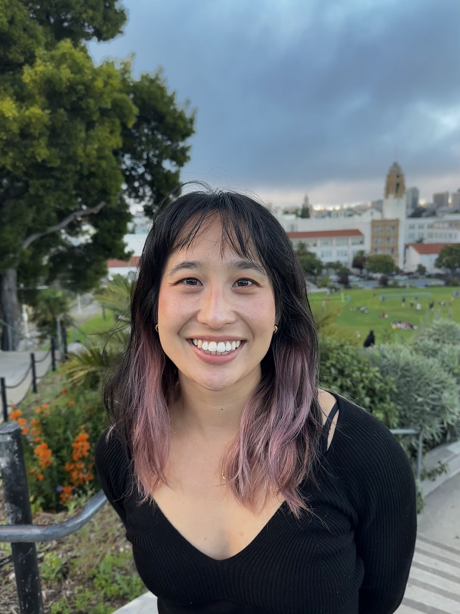

Organizers

Ching Fang
Harvard University
Satpreet Singh
Harvard University
In this workshop, we bring together experimentalists and theorists to explore a nascent area in neuroscience: using agent-based models to simulate animal behavior and understand underlying neural computations. Agents are models that can sample from and interact with their environment to take actions. These models offer a powerful platform for neuroscientists to formulate and test hypotheses about how animals can perform complex, multi-step behaviors in naturalistic environments. Applications in this area have ranged from social behavior to foraging to dexterous motor control. As this approach gains traction, we face critical questions: How well can agents replicate complex animal behavior? When is embodiment crucial? To what extent do experimental data support the neural mechanisms suggested by these models?
To begin addressing these questions, we invite speakers with diverse perspectives on agent-based models in neuroscience. A prevailing paradigm is to train agents to solve difficult behavioral tasks commonly used in experimental neuroscience, such as foraging tasks that demand multi-step planning, decision-making, and memory. Typically trained through deep reinforcement learning, these models can explain aspects of animal behavior. The representations found in these models can also explain neural data phenomena found in animals and provide theories for the underlying neural computations
Another body of work centers around embodied agents, that is, the development of "digital twins" of animals (e.g., bees, flies, rodents, worms, and others) to recapitulate animal behavior in a physics simulator. Embodiment offers unprecedented observability of the interplay between neural circuits and musculoskeletal dynamics. The ethological relevance of motor movement also enforces a naturalistic constraint on the computations developed in these models. Many of these models have been important for both uncovering sensorimotor computations in the brain and testing/generating hypotheses.
By bringing researchers from fields such as systems neuroscience, NeuroAI, reinforcement learning, and biomechanics, we aim to catalyze interdisciplinary conversations to explore the potential of agent models to provide insights into brain function.
| Time | Title | Speaker |
|---|---|---|
| 9:30 - 9:40 AM | Introduction | - |
| 9:40 - 10:05 AM | Dopamine neurons encode a multidimensional probabilistic map of future reward | Margarida Sousa, Champalimaud Foundation |
| 10:05 - 10:30 AM | Recurrent network models of planning in prefrontal cortex | Kristopher Jensen, University College London |
| 10:30 - 10:45 AM | Break | - |
| 10:45 - 11:10 AM | Discovering Interpretable Cognitive Models from Behavior Data | Kevin Miller, DeepMind |
| 11:10 - 11:35 AM | Talk title: Multi-agent foraging across real-world environments | Emily Mackevicius, Basis Research Institute |
| 11:35 AM - 12:00 PM | Active Electrosensing and Emergent Communication in Artificial Fish Collectives | Satpreet Singh, Harvard University |
| 12:00 - 12:30 PM | Morning Panel | - |
| 3:30 - 3:55 PM | Why NeuroAI Needs Agents | Aran Nayebi, Carnegie Mellon University |
| 3:55 - 4:20 PM | Connectome-constrained neuromechanical models of how flies move | Bing Brunton, University of Washington |
| 4:20 - 4:40 PM | Break | - |
| 4:40 - 5:05 PM | Neuro-biomechanical Simulations in a Virtual Rodent | Bence P. Ölveczky, Harvard University |
| 5:05 - 5:30 PM | μSim: A goal-driven framework for elucidating the neural control of movement through musculoskeletal modeling | Shreya Saxena, Yale University |
| 5:30 - 5:45 PM | Break | - |
| 5:45 - 6:30 PM | Afternoon Panel | - |
Champalimaud Foundation
University College London
DeepMind
Basis Research Institute
Harvard University
Carnegie Mellon University
University of Washington
Harvard University
Yale University
Harvard University
Harvard University
With consent from speakers, we will record the workshop and make the video available to the public. Check back for more information.